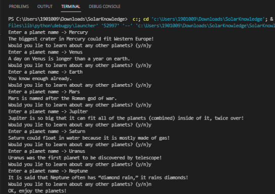
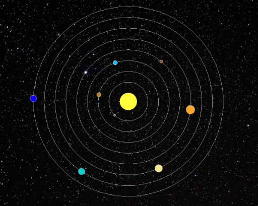
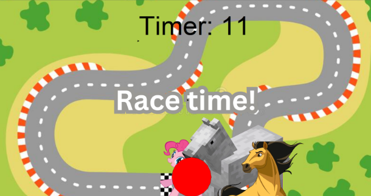

Portfolio
Home
Portfolio
About Me
Welcome to my Portfolio Page!
Project One: PLTW 1.1.9 Python Iteration and Movement.


For our 1.1.9 project we created a porgram called Solar Knowledge! When you first run it the planets, background pic, the sun, and orbital lines will pop down. It will then give the user the opportunity to input a planet name, once done so it will highlight the orbital line of the respective planet and give the user a fun fact about the planet. When the user is done learning about planets, the planets will begin orbitting.
Project Two: PLTW 1.2.5.

For our 1.2.5 project we created a game called a horse race. It allows you to race your horse (pinkipie) against two other horses (the spirit and minecraft horse). Once you finish going around the track you click the big red button which will let you know where you placed in comparison to the other horses.
Using App Inventor to make app game Duck Hunter.
Interactive Fiction Rags to Riches.
Black Jack game written in Python.
Modified bits in pictures.
Use data files to create graphs.
Using netlogo do remix of illusions.
Interactive Fiction Rags to Riches.